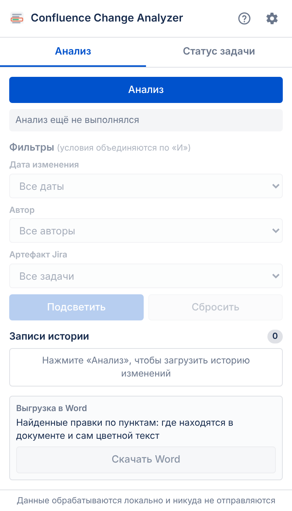
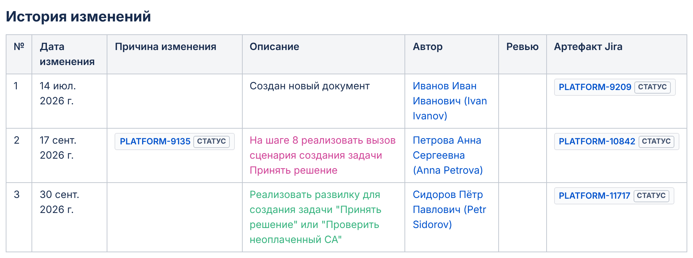
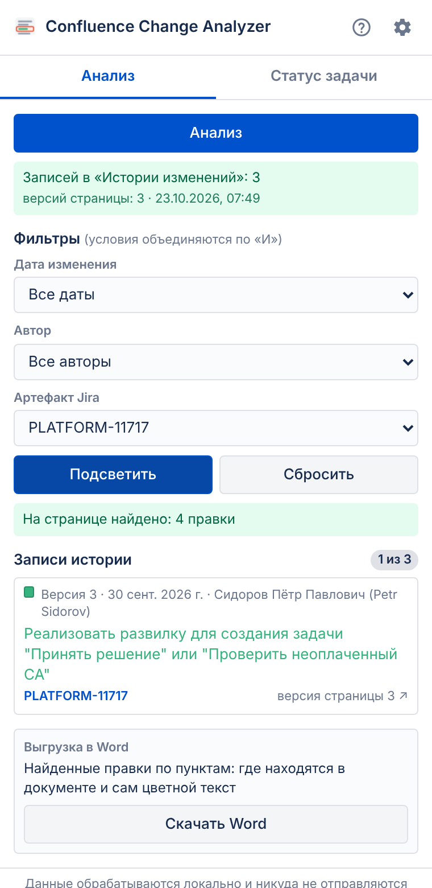
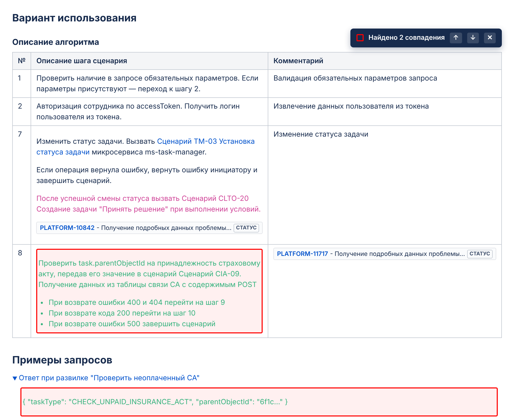
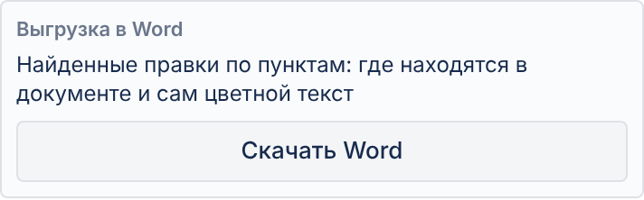
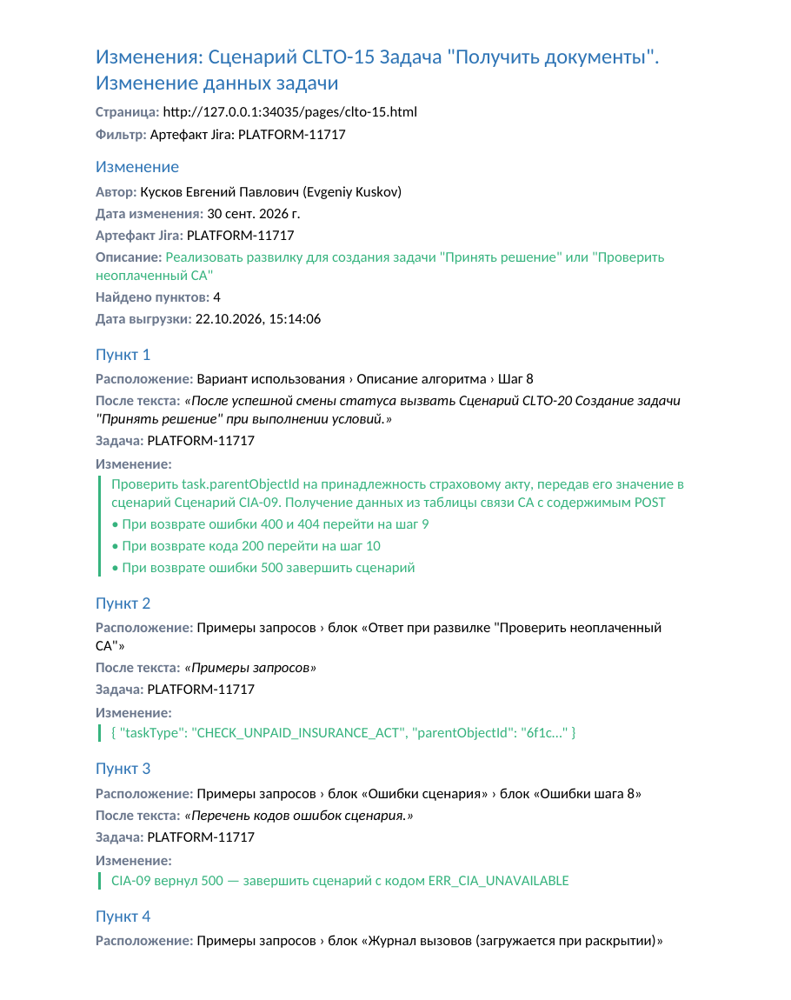
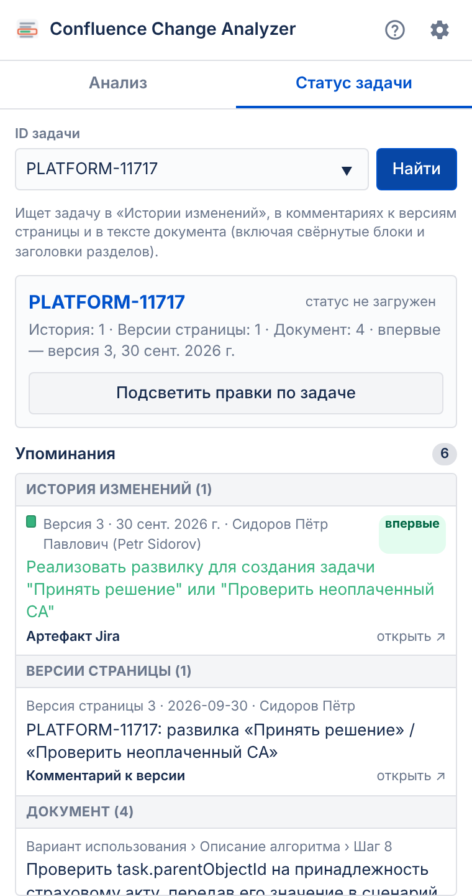
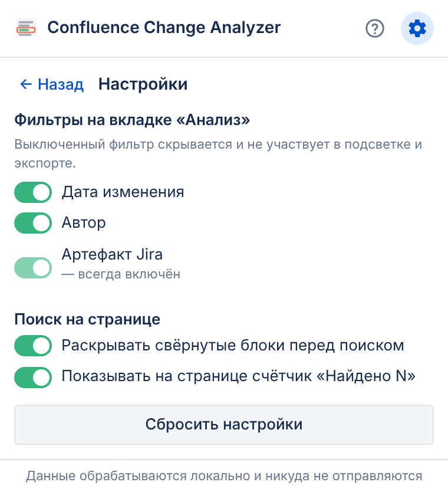

Как это работает
В документе Confluence есть таблица «История изменений». Каждая её строка — одна правка: дата, описание, автор и задача Jira. Описание каждой правки написано своим цветом, и тем же цветом эта правка внесена в текст документа.
🔒 Всё происходит только в вашем браузере. Рамки видите только вы, сама страница в Confluence не меняется, данные никуда не отправляются. Работает и при просмотре страницы, и в режиме редактирования.
Установка (один раз)
- Соберите расширение:
npm install, затемnpm run build— появится папкаdist. - Откройте в Chrome адрес
chrome://extensions. - Включите переключатель «Режим разработчика» (справа вверху).
- Нажмите «Загрузить распакованное расширение» и выберите папку
dist. - Нажмите на значок пазла 🧩 на панели Chrome и закрепите Confluence Change Analyzer 📌 —
появится иконка
 .
.
После обновления кода нажмите ↻ «Обновить» у расширения на странице chrome://extensions
и перезагрузите страницу Confluence.
1 Откройте документ и нажмите на иконку
Откройте страницу Confluence с таблицей «История изменений» и нажмите на иконку расширения
 на панели Chrome.
на панели Chrome.
Откроется окно с двумя вкладками:
- Анализ — фильтры, подсветка и выгрузка в Word;
- Статус задачи — где упоминается конкретная задача.
Справа вверху: ? — эта инструкция, ⚙ — настройки.

2 Нажмите «Анализ»
Расширение прочитает таблицу «История изменений» на открытой странице и для каждой строки запомнит:
- № версии и дату изменения;
- описание и его цвет;
- автора;
- артефакт Jira (задачу).
Под кнопкой появится зелёная строка «Найдено записей: N», а фильтры станут активными.

3 Выберите фильтр
Доступны три фильтра (условия объединяются по «И»):
| Фильтр | Что будет подсвечено |
|---|---|
| Артефакт Jira | Места документа цвета этой правки, рядом с которыми есть ссылка на выбранную задачу |
| Дата изменения | Все места цвета правки (или правок) с этой датой |
| Автор | Все места цвета правок этого автора |
В списке «Записи истории» остаются только подходящие строки. Цветной квадратик слева показывает, по какому цвету будет идти поиск.
Пример: выбрана задача PLATFORM-11717 → это версия 3 → цвет зелёный.

4 Нажмите «Подсветить»
- Расширение само раскроет свёрнутые блоки (макрос «Expand», «Показать больше» и т.п.), чтобы ничего не пропустить.
- Найденные места обводятся красной рамкой.
- Справа вверху появится панель «Найдено N совпадений»: ↑ ↓ — перейти к предыдущему/следующему, ✕ — убрать подсветку.
Кнопка «Сбросить» в окне расширения тоже убирает все рамки.
Отменённая правка — если описание версии в «Истории изменений» зачёркнуто — обводится пунктирной рамкой со штриховкой и подписью «✕ Отменено · версия N»; в списке записей у неё пометка «отменена».
Розовый текст шага 7 не обведён: это правка версии 2 (другой цвет и другая задача).

5 Скачайте Word
Внизу вкладки «Анализ» нажмите «Скачать Word» — выгрузятся правки, найденные по фильтру (то, что подсвечено на странице). Файл сохранится в «Загрузки».
В файле:
- шапка — страница, фильтр, автор, дата и описание изменения (тем же цветом);
- каждый пункт — где находится правка (раздел › подраздел › шаг), после какого текста она стоит, и сам цветной фрагмент.


6 Вкладка «Статус задачи»
Показывает, где, когда и кем упоминалась задача.
- Введите ID задачи, например
PLATFORM-11717, или вставьте ссылку на неё (подсказки — задачи из «Истории изменений»). - Нажмите «Найти» (или Enter). Если анализ ещё не делали, он запустится сам.
Результат:
- Карточка задачи — ссылка на задачу и текущий статус из макроса Jira на странице.
- История изменений — в каких версиях задача стоит в «Артефакт Jira», «Причине изменения» или в описании; самая ранняя отмечена «впервые».
- Версии страницы — комментарии к версиям, где упомянута задача.
- Документ — все места в тексте (в т.ч. в свёрнутых блоках и заголовках разделов). Клик → «показать на странице»: блоки раскроются, место мигнёт красной рамкой.
Кнопка «Подсветить правки по задаче» переключит на вкладку «Анализ» и обведёт правки.
Статус берётся из макроса Jira на открытой странице — запросов в Jira расширение не делает. Статус на момент старой версии Confluence не хранит, поэтому показывается текущий.

7 Настройки ⚙
Нажмите на шестерёнку в правом верхнем углу окна.
- Фильтры — можно выключить «Дата изменения» и «Автор»: выключенный фильтр пропадает с вкладки «Анализ» и не учитывается. «Артефакт Jira» выключить нельзя.
- Раскрывать свёрнутые блоки — если выключить, поиск идёт только по видимому тексту.
- Показывать счётчик «Найдено N» на странице.
Изменения сохраняются сразу. «← Назад» — вернуться к вкладкам, «Сбросить настройки» — вернуть всё по умолчанию.

Частые вопросы
Почему ничего не подсветилось?
- Сначала нажмите «Анализ» — без него расширение не знает цветов правок.
- Проверьте, что правка в документе написана точно тем же цветом, что и описание в «Истории изменений». Если при редактировании выбрали похожий, но другой оттенок, совпадения не будет.
- При фильтре по задаче ссылка на задачу должна стоять рядом с цветным текстом (в той же ячейке, строке таблицы или абзаце).
Увидят ли рамки коллеги?
Нет. Рамки рисуются только в вашей вкладке браузера и исчезают после перезагрузки страницы.
Куда отправляются данные?
Никуда. Анализ, подсветка и создание Word-файла выполняются локально в браузере.
Работает ли в режиме редактирования?
Да — и в Server / Data Center (редактор TinyMCE), и в Cloud. В редакторе рамки рисуются отдельным слоем поверх текста, сам документ не меняется — поэтому при нажатии «Опубликовать» в страницу ничего лишнего не попадёт. Расширение никогда не уходит со страницы редактора, так что несохранённые правки не потеряются.
Удобно: внесли правку цветом → нажали «Подсветить» → проверили, что всё по задаче на месте, ещё до публикации.
Работает ли с Confluence Cloud?
Да, поддерживаются Confluence Server/Data Center 6.x+ и Confluence Cloud (*.atlassian.net).